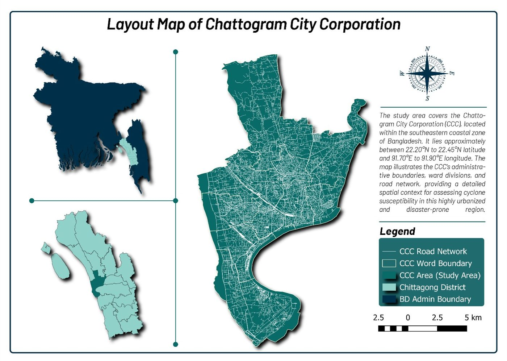
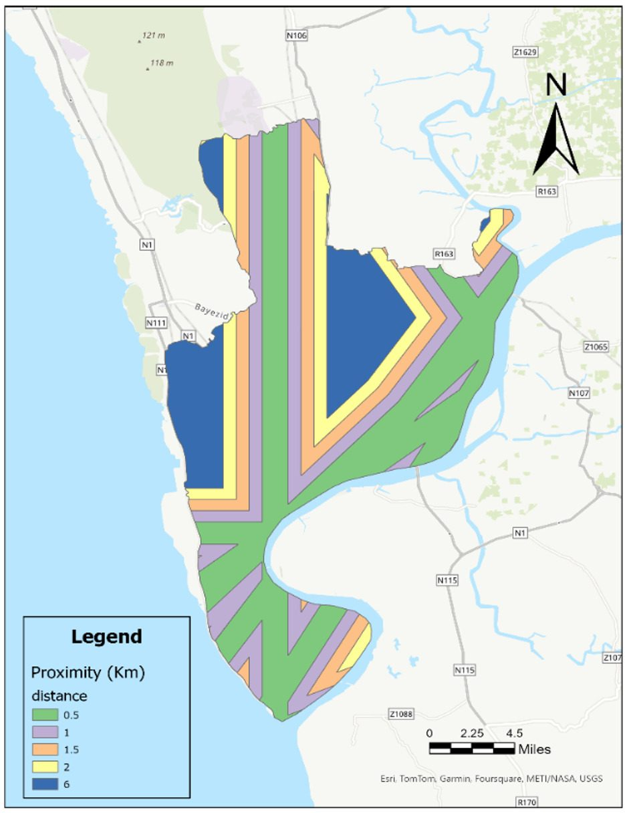
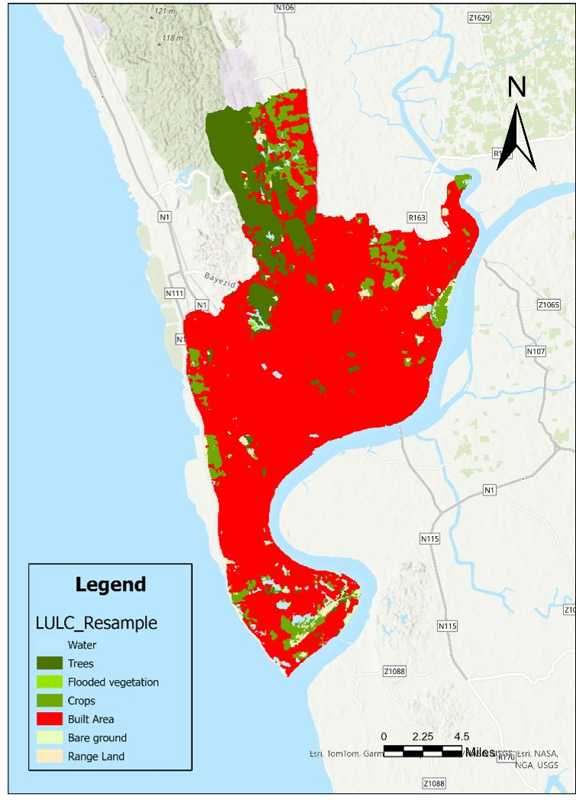
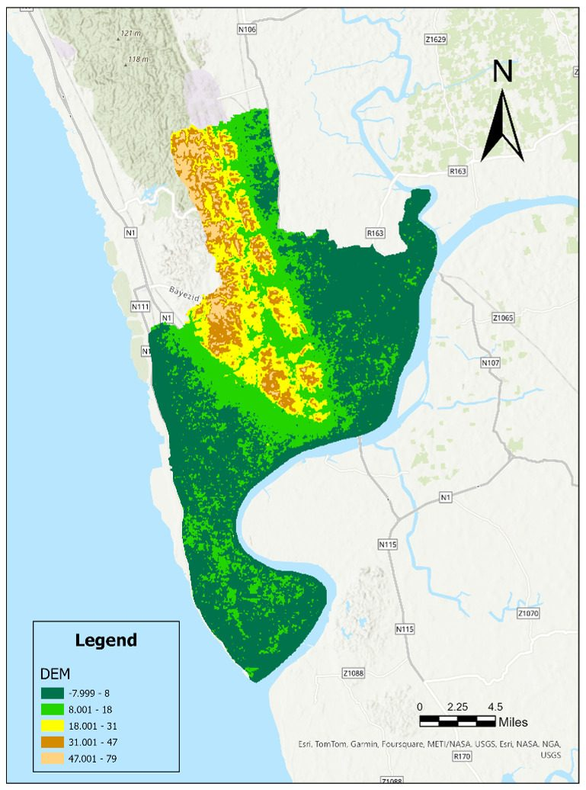
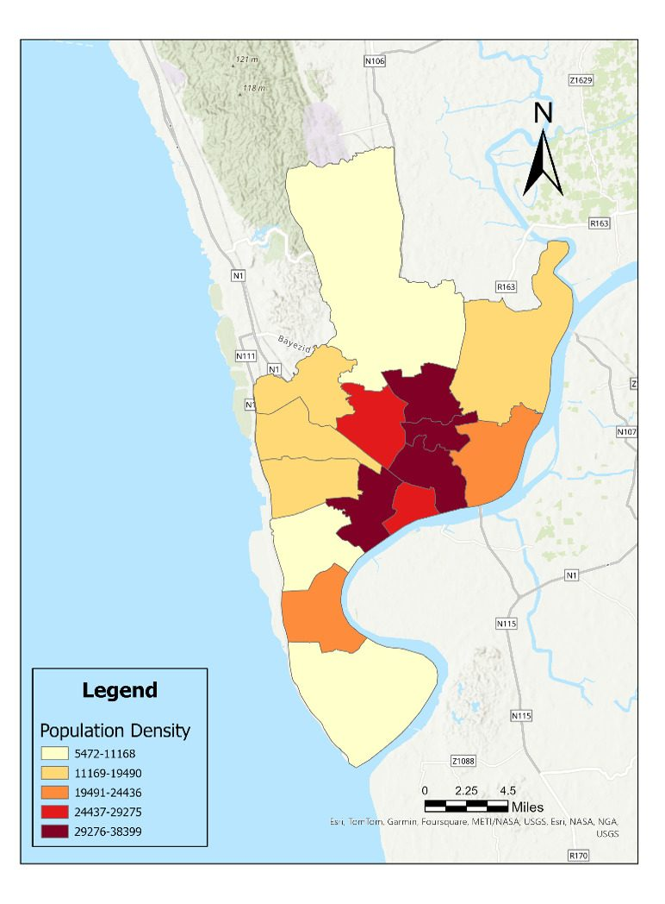

Maps & Outputs

Cyclone Hazard Map

Study Area — Chittagong City Corporation

Proximity to Cyclone Track

Land Use / Land Cover

Digital Elevation Model

Population Density
This project assesses cyclone vulnerability in Chittagong City Corporation using a GIS-based Multi-Criteria Decision Analysis approach paired with the Analytic Hierarchy Process. Layers such as land use, elevation, drainage density, and proximity to shelters and cyclone tracks combine into a single hazard picture.




